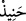

“And olsun ki elçilerimiz İbrahim’e müjde getirdiler” yani, Allah’a and olsun ki
Cebrail ve onunla birlikte, son derece yakışıklı erkekler suretinde bir grup melek
İbrahim (a.s.)’a Sâre’den bir çocuğu olacağı müjdesiyle geldiler. Bu müjdenin Sâre’den
olacak çocuğu ile ilgili olduğunu, bu çocuğun başka surelerde bizzat ismiyle
anılmasından çıkarıyoruz. Ayrıca burada önce müjdenin ne olduğu belirtilmemiş, mutlak
olarak zikredilmiş, sonra “biz de ona İshak’ı müjdeledik.” (Hud, 11/71) ifadesiyle
kayıtlanmış, belirtilmiştir. Mutlak ise mukayyede göre açıklanmak durumundadır.
“ve: “Selâm” Sana selâm verdik veya veriyoruz, “dediler. O” İbrahim (a.s.) “da”
size de “selâm” olsun “dedi” Böylece İbrahim (a.s.) elçileri, onlarınkinden daha güzel
bir şekilde selâmlamış oldu. Çünkü “elçilerin selâmlamasındaki” fiil cümleleri,
yenilenme ve sonradan olma mânâsına delâlet ederken, “O’nun selâmındaki” isim
cümlesi, devamlılık ve sebâta delâlet etmektedir.
Kâşifî der ki: “İbrâhim (a.s.) onların melekler olduğunu bilemedi. Onları
misafirhâneye oturttu.
“ve” İbrahim (a.s.) fazla beklemeden “hemen kızartılmış” yâni, bundan sonra
İbrâhim (a.s.) çok durmadan, acele olarak “bir buzağı getirdi.” Sıcak taş üzerinde
pişirerek meleklerin önüne koydu.
“__WORD__ toprakta açılmış bir çukurda tandırsız ve ateş değmeksizin sadece sımsıcak
taşlarla kızartılmış olan, demektir. Nitekim çölde yaşayanlar da böyle yaparlar. Etleri
sımsıcak taşlarla bir çukurda kızartırlar.
el-Kevâşî’de ise şöyle denilir: Küçük bir çukurda kızartılmış, üzerinden yağ
damlayan ete “hanîz” denir.
et-Te’vîlâtü’n-Necmiyye’de şöyle denilir: “Selam” dediler.” yani merhametli
Rabbinin söylediği selamı sana tebliğ ediyoruz. “O da: “Selam” dedi” yani ‘O Celil’in
selamı üzerimize olsun.’ Bu tıpkı Habîbullah (s.a.)’in İsra gecesindeki durumuna
benziyor. Allah Teâlâ o gece: “Selam sana ey Peygamber, Allah’ın rahmeti ve bereketi
üzerine olsun.” deyince Hz. Peygamber (a.s.): “Selam hem bizim üzerimize hem de
Allah’ın salih kullarının üzerine olsun!” demişti.[154]
Allah’ın Habibi ile yani Hz. Peygamber ile Allah’ın Halîli (dostu İbrahim) arasındaki
fark şudur: Allah’ın Habîbi’ne (s.a.) verilen selam vasıtasız iken, Allah’ın Halîli’ne,
dostuna verilen selam elçilerin aracılığıyla verilmiştir. Ayrıca Habib’e verilen selamda
fazladan ‘Allah’ın rahmeti ve bereketi’ ifadesi mevcuttur. “ve” Hz. İbrahim kendisine
getirilen selama karşı ikram olarak ve bu selamı getiren elçileri ağırlamak maksadıyla
“hemen kızartılmış bir buzağı getirdi.”
Dilberin postacısı bir haber getirdi
Benim sevgilimden bir selam geldi
Müjdelik olarak ona halimi ve canımı veririm
Neyim varsa onun yoluna fedâ ederim